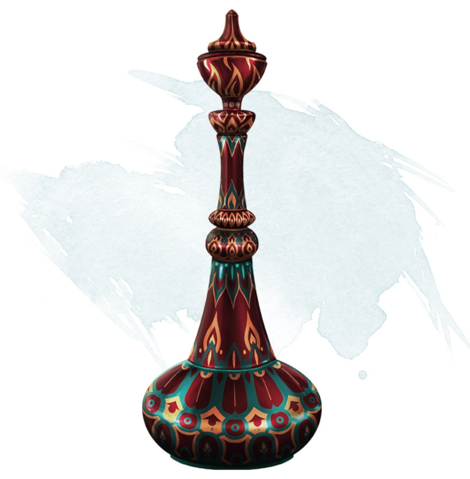

Bouteille de l'éfrit
[ Efreeti Bottle ] [ Bouteille du mauvais génie ]
Objet merveilleux, très rare
Cette bouteille en laiton peinte pèse 500 grammes. Lorsque vous utilisez une action pour en retirer le bouchon, un épais nuage de fumée se déverse de la bouteille. À la fin de votre tour, la fumée disparaît en une myriade de flammèches inoffensives, et un éfrit apparaît dans un espace inoccupé dans un rayon de 9 mètres autour de vous.
La première fois que la bouteille est ouverte, la MD lance 1d100 pour déterminer ce qui se produit.
La première fois que la bouteille est ouverte, la MD lance 1d100 pour déterminer ce qui se produit.
| d100 | Effet |
|---|---|
| 01-10 | L'éfrit vous attaque. Après avoir combattu pendant 5 tours, l'éfrit disparaît, et la bouteille perd sa magie. |
| 11-90 | L'éfrit vous sert pendant 1 heure, faisant ce que vous lui ordonnez de faire. Puis l'éfrit retourne dans la bouteille, et un nouveau bouchon l'y enferme. Le bouchon ne peut plus être retiré au cours des 24 heures qui suivent. Les deux fois suivantes que la bouteille est ouverte, il se produit la même chose. Si la bouteille est ouverte une quatrième fois, l'éfrit s'échappe et disparaît, puis la bouteille perd sa magie. |
| 91-00 | L'éfrit peut lancer le sort souhait trois fois pour vous. Il disparaît lorsqu'il a accordé le troisième souhait ou au bout d'une heure, puis la bouteille perd sa magie. |
Dungeon Master´s Guide (SRD)
